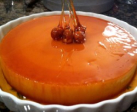

Ingredients
- 1 1/2 cups white sugar
- 1 (14 ounce) can sweetened condensed milk
- 1 (12 fluid ounce) can evaporated milk
- 1/2 cup milk
- 6 eggs
- 1/2 cup fresh shredded coconut
Flan de Coco- Coconut Flan
Insructions
Preheat oven to 350 degrees F (175 degrees C).
Place 1 cup of the sugar in a small saucepan over medium heat.
Cook gently, without stirring, but shaking occasionally until the sugar has melted.
Continue cooking until the sugar has completely melted, and turned golden brown.
Pour into a large, glass baking dish. Spread the caramel evenly over
the bottom of the dish, then set aside to cool for 15 minutes before proceeding.
Once the caramel has hardened, pour the condensed milk, evaporated milk, milk, eggs,
1/2 cup sugar, and coconut into a blender. Blend for 3 minutes until smooth.
Pour into baking dish over the caramel.
Bake in preheated oven for 45 minutes until set. When done, remove from oven
and let cool for 30 minutes. Run a knife around the edges of the dish to separate the flan from the sides.
Refrigerate overnight.
Ingredients
- 1 1/2 cups white sugar
- 1 (14 ounce) can sweetened condensed milk
- 1 (12 fluid ounce) can evaporated milk
- 1/2 cup milk
- 6 eggs
- 1/2 cup fresh shredded coconut
Flan de Coco- Coconut Flan
Insructions
Preheat oven to 350 degrees F (175 degrees C). Place 1 cup of the sugar in a small saucepan over medium heat. Cook gently, without stirring, but shaking occasionally until the sugar has melted. Continue cooking until the sugar has completely melted, and turned golden brown. Pour into a large, glass baking dish. Spread the caramel evenly over the bottom of the dish, then set aside to cool for 15 minutes before proceeding. Once the caramel has hardened, pour the condensed milk, evaporated milk, milk, eggs, 1/2 cup sugar, and coconut into a blender. Blend for 3 minutes until smooth. Pour into baking dish over the caramel. Bake in preheated oven for 45 minutes until set. When done, remove from oven and let cool for 30 minutes. Run a knife around the edges of the dish to separate the flan from the sides. Refrigerate overnight.